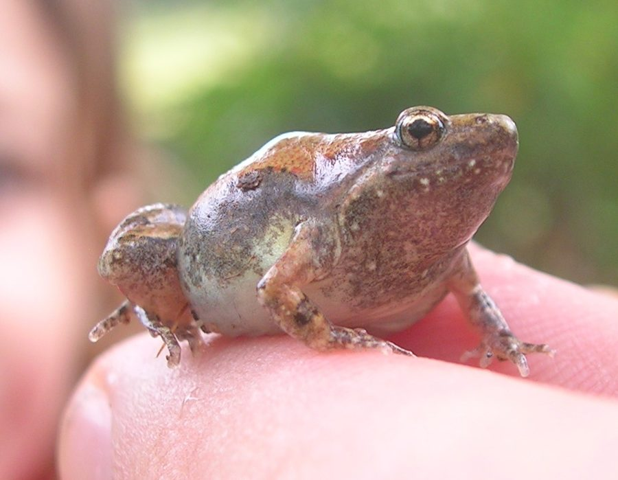

छोटा मेंढकOrnate Narrow-mouthed Frog
Microhyla ornata · Microhylidae · AMP-0005

- Scientific name
- Microhyla ornata (Duméril & Bibron, 1841)
- Family
- Microhylidae
- Hindi
- छोटा मेंढक
- Status here
- native
- IUCN
- LC
When to look कब देखें
Present all year.
छोटा मेंढक / Ornate Narrow-mouthed Frog
Microhyla ornata (Duméril & Bibron, 1841) — Microhylidae
छोटा मेंढक (ऑर्नेट नैरो-माउथेड फ्रॉग) — पूर्वी उत्तर प्रदेश के घास के मैदानों, कृषि क्षेत्रों और बाग-बगीचों में पाया जाने वाला एक अत्यंत छोटा उभयचर है। यह दक्षिण एशिया के सबसे छोटे उभयचरों में से एक है, जिसकी लंबाई केवल 18 से 25 मिलीमीटर तक होती है। इसकी मुख्य पहचान इसका नुकीला सिर, चिकनी भूरी-कांस्य त्वचा और पीठ पर बना एक विशिष्ट गहरे रंग का हीरे या तीर जैसा पैटर्न है। आकार में छोटा होने के बावजूद, मानसून के दौरान नर मेंढक अस्थायी पानी के गड्ढों में इकट्ठा होकर एक बहुत तेज़, झींगुर जैसी आवाज़ (trill) निकालते हैं। यह मिट्टी और पत्तियों के ढेर (leaf litter) में छिपकर रहता है और दीमक तथा चींटियों का शिकार करता है।
Quick Identification त्वरित पहचान
| Feature | Description |
|---|---|
| Size | Extremely small size (18–25 mm snout-vent length); tiny and delicate body |
| Shape | Distinctive tear-drop or pear-shaped body with a small, pointed snout and head |
| Colouration | Bronze-brown dorsum with a dark, symmetrical arrow or diamond-shaped marking on back |
| Skin | Smooth to slightly granular skin, lacking prominent warts or bony ridges |
| Vocal sac | In males, the throat is dusky black due to the single subgular vocal sac |
| Hind limbs | Long, slender hind limbs; toes are barely webbed at the base |
Field tip: Look in damp grass or leaf litter near temporary puddles after heavy monsoon rains. Listen for a loud, repeating insect-like trill. They are often found in water-filled hoof-prints or small tyre tracks.
Morphology आकारिकी
Biometrics (typical measurements in the northern Indian plains):
| Measurement | Range |
|---|---|
| Snout-vent length (SVL) | 18–25 mm |
| Weight | 1.2–3.0 g |
Description: The Ornate Narrow-mouthed Frog is characterized by its tiny, compact, pear-shaped body. The snout is pointed and projects slightly beyond the mouth. The dorsum is greyish-brown or bronze, marked with a dark brown, ornamental pattern resembling a diamond or arrow. A dark stripe runs from the tip of the snout, through the eye, along the side of the body to the groin. The legs are slender, marked with dark transverse bars. The ventral side is pale cream, with the throat in males being dark brown to blackish during the breeding season.
The tympanum is hidden under the skin. Parotoid glands are absent. The toes are long and slender, with only a trace of webbing at the base.
Behaviour & Ecology व्यवहार और पारिस्थितिकी
This species is crepuscular and nocturnal. During the dry season, it aestivates deep under soil cracks, leaf litter, or under rotting wood logs. It emerges explosively with the onset of the monsoon.
- Micro-habitat: Heavily associated with moist, shaded micro-habitats, including garden leaf litter and edges of seasonal pools. It crawls rather than leaps when foraging, but can make rapid, short jumps when disturbed.
- Specialist feeder: Unlike many larger generalist frogs, M. ornata is a specialist predator of small ground-active insects, primarily ants and termites.
- Vocalizations: Males call in large numbers from the edge of standing water. The call is a loud, dry, cricket-like rasping trill that is surprisingly loud for the animal's size.
Tadpole Stage
- Body form and size: The tadpole is small, transparent, and glass-like, measuring up to 15–20 mm in total length. The body is broad, and the tail is long with clear fin membranes.
- Aquatic habitat preference: Prefers shallow, temporary, sun-exposed rainwater pools, grassy ditches, and inundated paddy field borders. They swim in the middle of the water column in schools, filter-feeding on phytoplankton.
- Duration to metamorphosis: Metamorphosis is extremely rapid, taking only 3 to 4 weeks, allowing them to exit pools before they dry up.
- Distinguishing features: Transparent body showing internal organs; lacks keratinized mouthparts (lips and teeth) characteristic of other ranid/dicroglossid tadpoles.
Life Cycle / Phenology जीवन चक्र
- Breeding trigger: Initiated by the first heavy monsoon rains in June or July. Breeding continues through September.
- Amplexus: Axillary amplexus takes place in shallow water.
- Eggs: The female lays a small film of clear, gelatinous eggs that float on the water surface. A single clutch contain 200–600 eggs.
- Metamorphosis: Hatching occurs within 24–48 hours. The tiny froglets (3–5 mm) emerge from the pools in late July or August and migrate into the surrounding leaf litter.
Host Plants or Prey आहार
Primary food items:
- Ants: Small species of Pheidole, Solenopsis, and Monomorium.
- Termites: Alates and workers of Odontotermes spp.
- Invertebrates: Collembolans, small mites, and tiny soil beetles.
Predators / Natural Enemies शत्रु
- Spiders: Giant huntsman spiders and water spiders prey on adults near pool margins.
- Insects: Water scorpion (Laccotrephes) and giant water bug (Lethocerus) larvae prey heavily on tadpoles.
- Snakes: Buff-striped Keelback (Amphiesma stolatum) and Checkered Keelback (Xenochrophis piscator) hunt them in wet grass.
- Birds: Cattle Egrets (Bubulcus ibis) forage on newly emerged froglets in crop fields.
Agricultural / Human Relevance कृषि प्रासंगिकता
Natural biological control agent. By preying almost exclusively on ants, termites, and small agricultural weeds' pests, they play a vital role in natural pest suppression around home gardens and fields. They are highly sensitive to soil toxicity and synthetic pesticide sprays, making them valuable bio-indicators of local soil health.
Expected Locally स्थानीय रूप से अपेक्षित
Not a field record. Written from published accounts for eastern Uttar Pradesh. No confirmed local sighting yet — if you have seen it, that is what the atlas needs.
अभी तक स्थानीय पुष्टि नहीं। यह विवरण प्रकाशित स्रोतों से है, किसी अवलोकन से नहीं।
A common but overlooked resident in Basti district, especially in rural gardens and mango groves. During July, their distinctive trilling chorus can be heard near almost every roadside ditch and waterlogged field. They frequently seek shelter under damp earthen pots (gharas) and brick piles near houses.
Distribution वितरण
Global range: Widespread across South Asia, including India, Nepal, Pakistan, Bangladesh, and Sri Lanka.
In India: Found across the plains and lower hills up to 1,000 metres.
In Uttar Pradesh: A common resident in all districts, particularly in the humid eastern Gangetic plains.
In Basti district / eastern UP: Highly common in rural and semi-urban agricultural margins and gardens.
Research Questions शोध प्रश्न
Anyone can investigate these | कोई भी इन प्रश्नों की जाँच कर सकता है
- How does the presence of synthetic pesticides affect the larval duration of Ornate Narrow-mouthed Frog tadpoles? — Compare development times in organic gardens vs. pesticide-treated fields.
- What is the primary micro-habitat temperature preferred by this species during daytime aestivation? — Locate day shelters and measure temperature and soil moisture levels.
- Does the calling activity of males correlate with changes in atmospheric pressure preceding monsoon rains? / क्या नर मेंढकों की पुकार की गतिविधि मानसून की बारिश से पहले वायुमंडलीय दबाव में बदलाव से संबंधित है? — Record calls daily alongside barometer readings.
- How do Ornate Narrow-mouthed Frogs interact with co-occurring frog species when breeding in tiny hoof-print pools? — Observe spatial segregation or competitive exclusion in temporary mini-pools.
- Which ant species constitute the majority of their diet in rural home gardens? / ग्रामीण घरेलू बगीचों में कौन सी चींटी प्रजातियाँ इनके आहार का बड़ा हिस्सा बनती हैं? — Perform non-lethal stomach-flushing or fecal analysis of foraging adults.
Similar Species मिलती-जुलती प्रजातियाँ
| Species | Key Difference | हिंदी |
|---|---|---|
| Fejervarya limnocharis (Asian Grass Frog) | Larger (35–55 mm); warty skin; pointed snout; makes cricket-like call; jumps long distances | फुदकी मेंढक — बड़ी और मस्सेदार त्वचा |
| Duttaphrynus melanostictus (Common Toad) | Much larger (50–150 mm); dry, heavily warty skin; parotoid glands behind eyes; moves by walking | भेंडुक — बहुत बड़ा, सूखी और मस्सेदार त्वचा |
| Euphlyctis cyanophlyctis (Skipper Frog) | Larger; aquatic; eyes set high on head; floats on water surface; leaps fast on water | कूद मेंढक — हमेशा पानी में तैरता है |
Field rule: Tiny size (under 2.5 cm), smooth bronze skin with a dark diamond-arrow shape on the back, and a narrow pointed head identify this species.
Taxonomy & Classification वर्गीकरण
Original description. André Marie Constant Duméril and Gabriel Bibron described the Ornate Narrow-mouthed Frog as Microhyla ornata in 1841 in their work Erpétologie Générale ou Histoire Naturelle Complète des Reptiles (Vol. 8, p. 745). The type locality was listed as India. The genus name Microhyla is derived from the Greek mikros (small) and hyle (wood or forest), describing their size and habitat. The specific name ornata is Latin for "decorated" or "ornate," referring to the dorsal pattern.
Subspecies. Monotypic — no subspecies are currently recognised.
Family and order placement. Placed in the order Anura, family Microhylidae (narrow-mouthed frogs), subfamily Microhylinae. The family Microhylidae is a diverse group of specialized fossorial or terrestrial frogs found globally.
Phylogenetic notes. Microhyla ornata belongs to a species complex that was recently split, separating western and eastern populations. The north Indian populations are confirmed as Microhyla ornata sensu stricto.
IUCN status rationale. Listed as Least Concern (LC). The species has an extremely large geographic range, high environmental tolerance, and stable population trends.
Photo Gallery फोटो गैलरी
References संदर्भ
- Duméril, A. M. C. & Bibron, G. (1841). Erpétologie Générale ou Histoire Naturelle Complète des Reptiles. Tome 8. Roret, Paris, p. 745. [original description]
- Daniel, J. C. (2002). The Book of Indian Reptiles and Amphibians. Bombay Natural History Society / Oxford University Press, Mumbai.
- Dutta, S. K. (1997). Amphibians of India and Sri Lanka (Checklist and Bibliography). Odyssey Publishing House, Bhubaneswar.
- Frost, D. R. (2024). Amphibian Species of the World: an Online Reference. Version 6.2. American Museum of Natural History, New York.
- IUCN SSC Amphibian Specialist Group (2024). Microhyla ornata. IUCN Red List of Threatened Species. Ver. 2024.
- GBIF Occurrence Data — Microhyla ornata, Uttar Pradesh (2010–2025).
Source file: species/fauna/amphibians/ornate_narrow_mouthed_frog.md